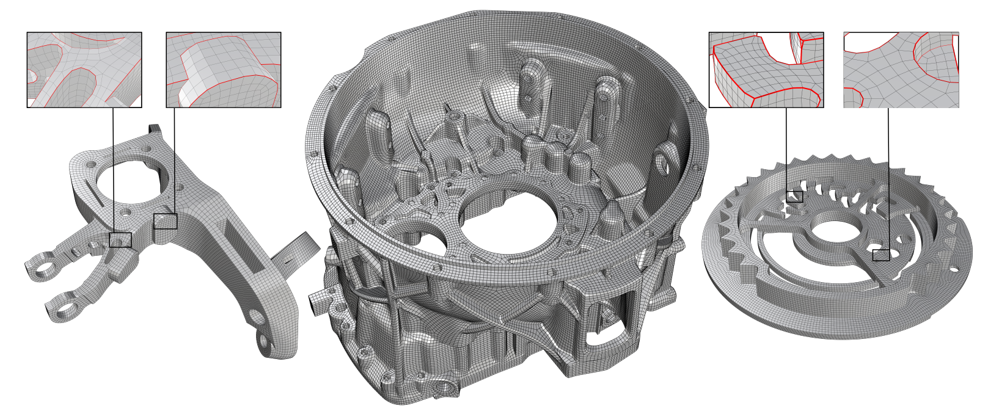
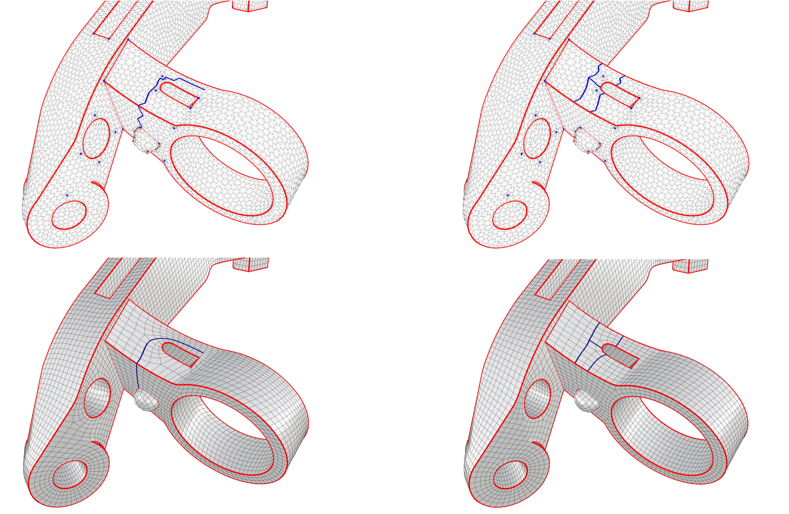
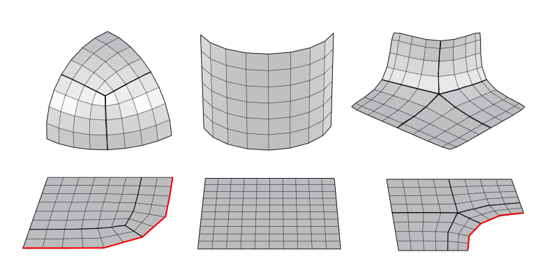

Field Smoothness-Controlled Partition for Quadrangulation
| Zhongxuan Liang Wei Du Xiao-Ming Fu | ||
| University of Science and Technology of China | ||
ACM Transactions on Graphics (Proc. SIGGRAPH), 44(4), 2025.
|
 Figure 1: Our generated high-quality quad meshes, with feature lines highlighted in red, show that our algorithm can handle models with various complex scenarios (such as high genus, varied geometries, and intricate features). |
|
|
Abstract |
We propose a novel partition method for reliable feature-aligned quadrangulation. The core insight of the partition is that smooth streamlines distant from singularities are more suitable as patch boundaries. This allows singularities to be enclosed within patches, resulting in straighter patch boundaries and reducing the distorting influence of singularities. Accordingly, we introduce a new patch quality control mechanism that keeps the patch boundaries inside regions with high field smoothness. Combined with other common metrics (e.g., aligning boundaries with field and feature lines), we develop a practical partition algorithm that first iteratively traces paths in field smoothness-controlled regions to form patches and then removes redundant paths to simplify the patch layout. We demonstrate the effectiveness and practicability of our partitions by using them to generate quality quad meshes on a massive test data set. Compared with state-of-the-art methods, our approach produces quad meshes with significantly enhanced quality while maintaining similar reliability, validating the core insight.
|
| Keywords |
Quadrangulation, quad meshing, quad meshes, field smoothness-controlled partition |
| Motivation |
In this paper, we propose a novel method for reliable feature-aligned quadrangulation. We tackle the crucial partition problem: Given the cross field, how to find partition that improves downstream quad mesh quality? The key insight lies in a requirement for patches to improve the connection between partition and quantization. After constructing a feature- and curvature-aligned cross field, making the patch boundaries straight enough and away from field singularities is beneficial to improve quad mesh quality. To generate such boundaries, our new requirement is to regulate the traced paths inside regions with high field smoothness, which can be evaluated as the sum of the field rotations along each path. 
Figure 2: Motivation. The paths rotate around the singular points and are not
straight enough, usually resulting in distorted quads (left). If we restrict the
paths to pass through regions with high field smoothness, this issue can be
alleviated, thereby improving the quality of the quad mesh (right).
|
| Methods |
As observed by [Campen et al. 2012], it is more likely for the quad meshing pipeline to generate a quality mesh from a cross field if the input surface is first partitioned into patches whose boundaries are straight and distant from field singularities. Therefore, one of our goals is to generate paths to construct such patch boundaries. To realize this goal, our approach introduces proxy metrics rather than imposing geometric restrictions (e.g., forbidding paths from passing through n-ring neighbors of the field singularities). The key for proxy metrics lies in the following observation: a path will become desired if we trace the path along the field in a surface region with very high field smoothness. Hence, proxy metrics are defined as measures of field smoothness on the path. Building upon the non-conforming polygonal patch layout framework, we introduce the concept of Sp-standard patch, which refers to an ideal patch for tessellation. We define this concept and iteratively construct Sp-standard patches on the surface. 
Figure 3: Several simple Sp-standard patches examples with tessellation, where Sp = ( ∞, 0, 0, 0, 0). The feature lines are drawn in red, the separatrices stemming from irregular vertices are drawn in dark black.
|
| Paper |
|
| Software |
Code and data |
| Ack |
|
|
Copyright and disclaimer: |